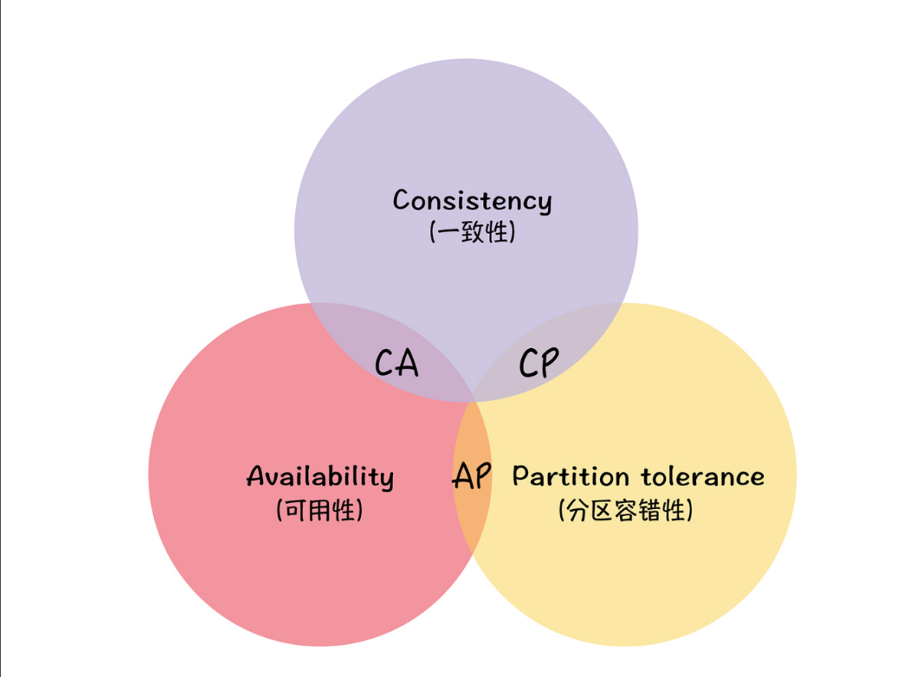

我们为什么需要了解分布式协议和算法呢？在我看来，它其实就是决定分布式系统如何运行的核心规则和关键步骤。 如果一个人想真正搞懂分布式技术，开发出一个分布式系统，最先需要掌握的就是这部分知识。
分布式算法是分布式技术中的核心，在分布式系统里，最重要的事情，就是如何选择或设计适合的算法，解决一致性和可用性相关的问题了。
分布式共识协议与算法 - 理论篇、协议
ACID
事务具有四个特性，分别是原子性（Atomicity）、一致性（Consistency）、隔离性（Isolation）和持久性（Durability）,简称为事务的ACID特性。
ACID 理论是对事务特性的抽象和总结，方便我们实现事务。你可以理解成：如果实现了操作的 ACID 特性，那么就实现了事务。
以上4个级别的隔离性依次增强，分别解决不同的问题。事务隔离级别越高，就越能保证数据的完整性和一致性，但同时对并发性能的影响也越大。
分布式事务
事务在分布式计算领域也得到了广泛的应用。在单机数据库中，我们很容易能够实现一套满足ACID特性的事务处理系统。
但是在分布式数据库中，数据分散在各台不同的机器上，如何对这些数据进行分布式事务处理具有非常大的挑战。通常一个分布式事务会涉及对多个数据源或业务系统的操作。加锁、时间序列等机制，只能保证单个节点上操作的 ACID特性，无法保证节点间操作的 ACID 特性。
那么怎么做才会让实现不那么难呢？答案是你要掌握分布式事务协议，比如二阶段提交协议和 TCC（Try-Confirm-Cancel）。
二阶段提交协议：
二阶段提交协议，顾名思义，就是通过二阶段的协商来完成一个提交操作，那么具体是怎么操作的呢？
提交请求阶段（又称投票阶段）
提交执行阶段（又称完成阶段）
在第一个阶段，每个参与者投票表决事务是放弃还是提交。一旦参与者投票要求提交事务，那么就不允许放弃事务。也就是说，在一个参与者投票要求提交事务之前，它必须保证能够执行提交协议中它自己那一部分，即使参与者出现故障或者中途被替换掉。
二阶段提交协议最早是用来实现数据库的分布式事务的，不过现在最常用的协议是 XA 协议。这个协议是 X/Open 国际联盟基于二阶段提交协议提出的，也叫作 X/Open Distributed Transaction Processing（DTP）模型，比如 MySQL 就是通过 MySQL XA实现了分布式事务。
但是不管是原始的二阶段提交协议，还是 XA 协议，都存在一些问题：因为上面这两点，我们无法根据业务特点弹性地调整锁的粒度，而这些都会影响数据库的并发性能。那用什么办法可以解决这些问题呢？答案就是 TCC。
TCC（Try-Confirm-Cancel）
TCC 是 Try（预留）、Confirm（确认）、Cancel（撤销） 3 个操作的简称，它包含了预留、确认或撤销这 2 个阶段。
TCC 本质上是补偿事务，它的核心思想是针对每个操作都要注册一个与其对应的确认操作和补偿操作（也就是撤销操作）。 它是一个业务层面的协议，你也可以将TCC 理解为编程模型，TCC 的 3 个操作是需要在业务代码中编码实现的，为了实现一致性，确认操作和补偿操作必须是等幂的，因为这 2 个操作可能会失败重试。
另外，TCC 不依赖于数据库的事务，而是在业务中实现了分布式事务，这样能减轻数据库的压力，但对业务代码的入侵性也更强，实现的复杂度也更高。所以，我推荐在需要分布式事务能力时，优先考虑现成的事务型数据库（比如 MySQL XA），当现有的事务型数据库不能满足业务的需求时，再考虑基于 TCC 实现分布式事务。
建议在开发实现分布式系统，如果不是必须，尽量不要实现事务，可以考虑采用强一致性或最终一致性。
TCC其实也是一种两阶段提交，客户端在扮演协调者的角色。
CAP理论
CAP 理论是一个很好的思考框架，它对分布式系统的特性做了高度抽象，比如抽象成了一致性、可用性和分区容错性，并对特性间的冲突（也就是 CAP 不可能三角）做了总结。
一致性说的是客户端的每次读操作，不管访问哪个节点，要么读到的都是同一份最新的数据，要么读取失败。你可以把一致性看作是分布式系统对访问本系统的客户端的一种承诺：不管你访问哪个节点，要么我给你返回的都是绝对一致的数据，要么你都读取失败。你可以看到，一致性强调的不是数据完整，而是各节点间的数据一致。
一致性这个指标，描述的是分布式系统非常重要的一个特性，强调的是数据的一致。也就是说，在客户端看来，集群和单机在数据一致性上是一样的。
不过集群毕竟不是单机，当发生分区故障的时候，有时不能仅仅因为节点间出现了通讯问题，节点中的数据会不一致，就拒绝写入新数据，之后在客户端查询数据时，就一直返回给客户端出错信息。
可用性说的是任何来自客户端的请求，不管访问哪个节点，都能得到响应数据，但不保证是同一份最新数据。你也可以把可用性看作是分布式系统对访问本系统的客户端的另外一种承诺：我尽力给你返回数据，不会不响应你，但是我不保证每个节点给你的数据都是最新的。
这个指标强调的是服务可用，但不保证数据的一致。
最后的分区容错性说的是，当节点间出现任意数量的消息丢失或高延迟的时候，系统仍然可以继续提供服务。也就是说，分布式系统在告诉访问本系统的客户端：不管我的内部出现什么样的数据同步问题，我会一直运行，提供服务。这个指标，强调的是集群对分区故障的容错能力。
因为分布式系统与单机系统不同，它涉及到多节点间的通讯和交互，节点间的分区故障是必然发生的，所以我要提醒你，在分布式系统中分区容错性是必须要考虑的。
CAP 不可能三角说的是对于一个分布式系统而言，一致性（Consistency）、可用性（Availability）、分区容错性（Partition Tolerance）3 个指标不可兼得，只能在 3 个指标中选择 2 个。

如何使用 CAP 理论：
我们都知道，只要有网络交互就一定会有延迟和数据丢失，而这种状况我们必须接受，还必须保证系统不能挂掉。所以就像我上面提到的，节点间的分区故障是必然发生的。也就是说，分区容错性（P）是前提，是必须要保证的。
现在就只剩下一致性（C）和可用性（A）可以选择了：要么选择一致性，保证数据绝对一致；要么选择可用性，保证服务可用。那么 CP 和 AP 的含义是什么呢？
当选择了一致性（C）的时候，如果因为消息丢失、延迟过高发生了网络分区，部分节点无法保证特定信息是最新的，那么这个时候，当集群节点接收到来自客户端的写请求时，因为无法保证所有节点都是最新信息，所以系统将返回写失败错误，也就是说集群拒绝新数据写入。
当选择了可用性（A）的时候，系统将始终处理客户端的查询，返回特定信息，如果发生了网络分区，一些节点将无法返回最新的特定信息，它们将返回自己当前的相对新的信息。
大部分人对 CAP 理论有个误解，认为无论在什么情况下，分布式系统都只能在 C 和 A 中选择 1 个。 其实，在不存在网络分区的情况下，也就是分布式系统正常运行时（这也是系统在绝大部分时候所处的状态），就是说在不需要 P 时，C 和 A 能够同时保证。只有当发生分区故障的时候，也就是说需要 P 时，才会在 C 和 A 之间做出选择。而且如果各节点数据不一致，影响到了系统运行或业务运行（也就是说会有负面的影
响），推荐选择 C，否则选 A。
CA 模型，在分布式系统中不存在。因为舍弃 P，意味着舍弃分布式系统，就比如单机版关系型数据库 MySQL，如果 MySQL 要考虑主备或集群部署时，它必须考虑 P。
CP 模型，采用 CP 模型的分布式系统，一旦因为消息丢失、延迟过高发生了网络分区，就影响用户的体验和业务的可用性。因为为了防止数据不一致，集群将拒绝新数据的写入，典型的应用是 ZooKeeper，Etcd 和 HBase。
AP 模型，采用 AP 模型的分布式系统，实现了服务的高可用。用户访问系统的时候，都能得到响应数据，不会出现响应错误，但当出现分区故障时，相同的读操作，访问不同的节点，得到响应数据可能不一样。典型应用就比如 Cassandra 和 DynamoDB。
1.3、BASE 理论
BASE是Basically Available(基本可用）、Soft state(软状态）和Eventually consistent(最终一致性）三个短语的简写。
BASE是对CAP中一致性和可用性权衡的结果，其来源于对大规模互联网系统分布式实践的总结，强调可用性。是基于CAP定理逐步演化而来的，其核心思想是即使无法做到强一致性，但每个应用都可以根据自身的业务特点，采用适当的方法来使系统达到最终一致性。
而它的核心就是基本可用（Basically Available）和最终一致性（Eventually consistent）。也有人会提到软状态（Soft state），在我看来，软状态描述的是实现服务可用性的时候系统数据的一种过渡状态，也就是说不同节点间，数据副本存在短暂的不一致。
基本可用是说，当分布式系统在出现不可预知的故障时，允许损失部分功能的可用性，保障核心功能的可用性。
实现基本可用的 4 板斧：
流量削峰、延迟响应、体验降级、过载保护、熔断和限流、故障和服务隔离，弹性扩容
最前端链路就做好流量控制，和最后的兜底方案
软状态
软状态是指允许系统中的数据存在中间状态，并认为该中间状态的存在不会影响系统的整体可用性，即允许系统在不同的数据副本之间进行数据同步的过程存在延时。
最终的一致
最终一致性强调的是系统中所有的数据副本，在经过一段时间的同步后，最终能够达到一个一致的状态。因此，最终一致性的本质是需要系统保证最终数据能够达到一致，而不需要实时保证系统数据的强一致性。
在实际工程实践中，最终一致性存在一下五类主要变种。
- 因果一致性(Causal consistency)
- 读己之所写(Read your writes)
- 会话一致性(Session consistency)
- 单调读一致性(Monotonic read consistency)
- 单调写一致性(Monotonic write consistency)
以上就是最终一致性的五种常见的变种，在实际系统实践中，可以将其中的若干个变种互相结合起来，以构建一个具有最终一致性特性的分布式系统。
那实现最终一致性的具体方式是什么呢？常用的有这样几种。
读时修复：在读取数据时，检测数据的不一致，进行修复。比如 Cassandra 的 Read Repair 实现，具体来说，在向 Cassandra 系统查询数据的时候，如果检测到不同节点的副本数据不一致，系统就自动修复数据。
写时修复：在写入数据，检测数据的不一致时，进行修复。比如 Cassandra 的 Hinted Handoff 实现。具体来说，Cassandra 集群的节点之间远程写数据的时候，如果写失败就将数据缓存下来，然后定时重传，修复数据的不一致性。
异步修复：这个是最常用的方式，通过定时对账检测副本数据的一致性，并修复。
另外，我还想补充一点，在实现最终一致性的时候，我推荐同时实现自定义写一致性级别（All、Quorum、One、Any）， 让用户可以自主选择相应的一致性级别，比如可以通过设置一致性级别为 All，来实现强一致性。
引用